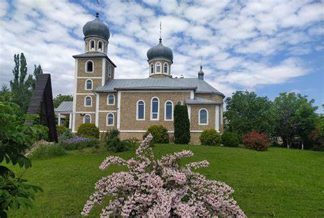
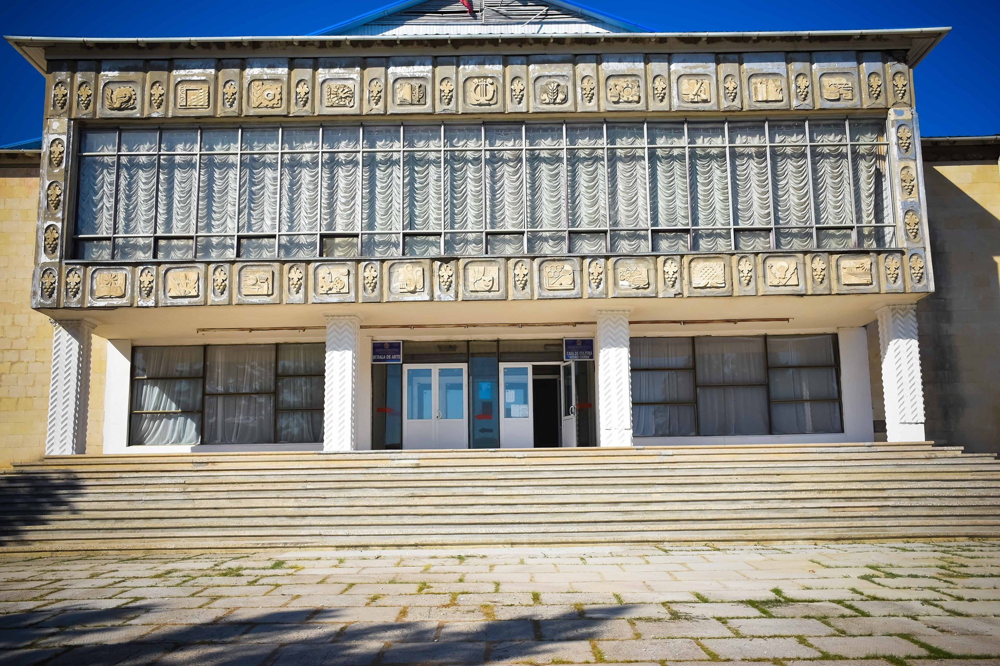
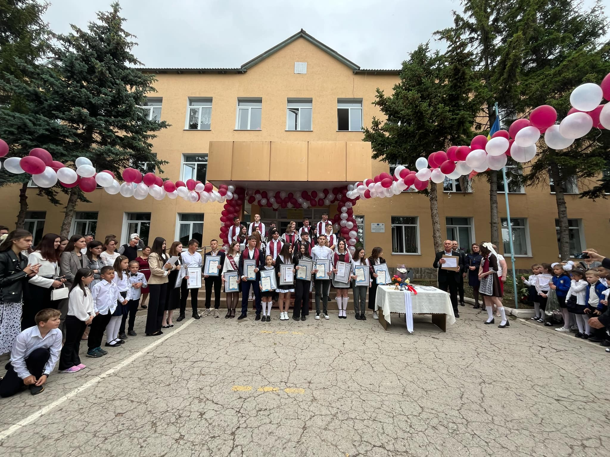
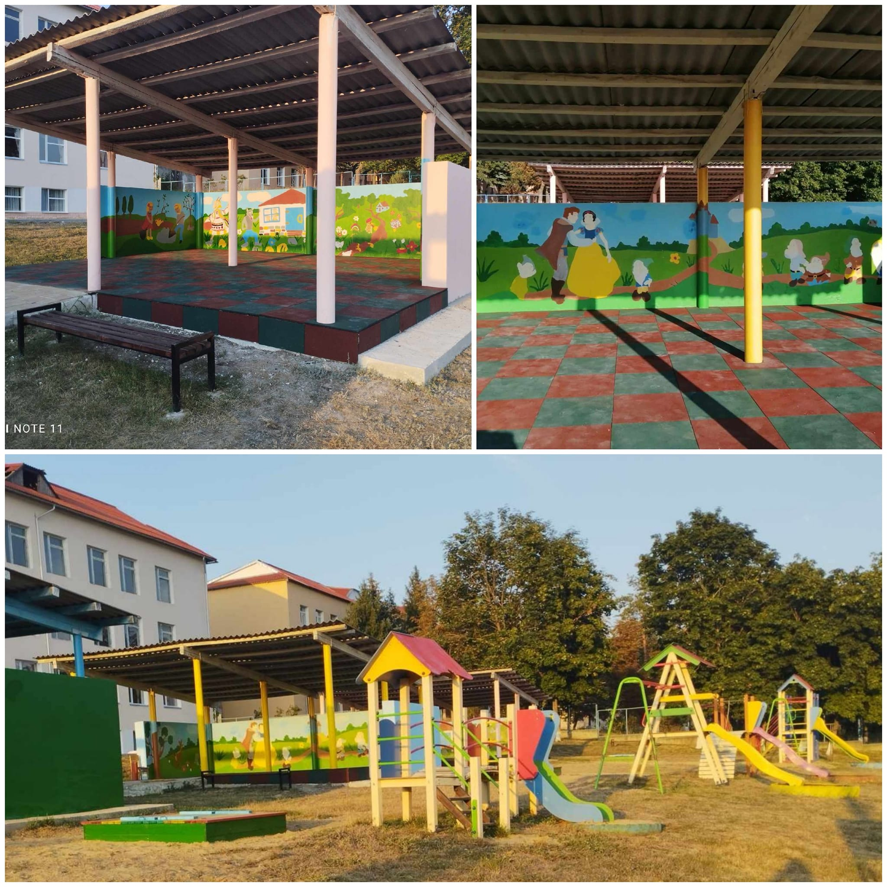

Explorează satul Cruglic
Biserica cu hramul ‚,Minunea Sf. Arh. Mihail”
Prima biserică din Cruglic, sfințită în 1902, avea hramul „Minunea Sf. Arh. Mihail” și a fost centrul vieții religioase locale. Din păcate, a fost distrusă în 1983 de autoritățile sovietice. În 1995, a fost deschisă o bisericuță în cimitirul satului. În 2000, s-a pus piatra de temelie pentru o nouă biserică în centrul satului. Lucrările au fost finalizate rapid, iar prima slujbă a avut loc pe 31 decembrie 2004. Biserica a fost sfințită pe 19 septembrie 2005 de Mitropolitul Vladimir și complet finalizată pe 19 decembrie 2007. Aceste realizări au fost posibile datorită eforturilor comunității și sprijinului primăriei, iar candela la Cruglic a fost reaprinsă.
de Cultură „Andrei Ciorbă”
Casa de Cultură „Andrei Ciorba” din Cruglic, raionul Criuleni, este dedicată dezvoltării vieții culturale locale și poartă numele lui Andrei Ciorba, un susținător al culturii .Acest centru oferă școală de arte pentru copii cu lecții de pictură, pian, fluier și chitară. Ansamblul de copii „Mugurașii”, ansamblul de maturi „Stejăreii” care promovează cântecele și dansurile tradiționale, și activități. La fel și o bibliotecă publică cu o colecție variată de cărți Casa de Cultură „Andrei Ciorba” joacă un rol esențial în îmbogățirea vieții culturale și artistice din satul Cruglic.
Liceul Teoretic Cruglic
Liceul Teoretic Cruglic, situat în satul Cruglic, raionul Criuleni, a fost fondat în anul 1990 cu scopul de a oferi educație de calitate elevilor din comunitate și din împrejurimi. În prezent, liceul are aproximativ 350 de elevi care beneficiază de facilități moderne, un personal didactic bine pregătit și un curriculum variat, care include atât discipline teoretice, cât și activități extracurriculare. Printre facilități se numără și o sală dedicată kickboxing-ului, care oferă elevilor oportunitatea de a se antrena și de a dezvolta abilități fizice și de autoapărare. De la înființare, liceul s-a dedicat formării academice și personale a elevilor, pregătindu-i pentru provocările viitoare și pentru integrarea în societate. Prin dedicarea sa față de educație, Liceul Teoretic Cruglic contribuie semnificativ la dezvoltarea tinerelor talente și la promovarea valorilor educaționale în satul Cruglic.
Grădinița de copii ,,Făguraș"
Grădinița „Făgăraș” din satul Cruglic, raionul Criuleni, oferă educație timpurie copiilor din comunitatea locală. Această instituție de învățământ preșcolar a fost creată pentru a sprijini dezvoltarea intelectuală și socială a celor mici într-un mediu prietenos și stimulativ. În prezent, Grădinița „Făgăraș” găzduiește aproximativ 90 de copii, care beneficiază de diverse activități educative și recreative. Grădinița dispune de facilități moderne și echipe de cadre didactice dedicate, ce contribuie la pregătirea copiilor pentru începutul școlii și la dezvoltarea abilităților lor de bază. Pe lângă activitățile educaționale, grădinița promovează valori importante precum cooperarea și respectul, având un impact semnificativ asupra comunității prin sprijinul acordat familiilor și dezvoltarea armonioasă a celor mici.